關於設計動機
路易莎咖啡近幾年拓展迅速，目前已為廣為人知的連鎖咖啡店，在風格上的發展也持續朝著品牌目標「 質感咖啡生活 」前進。但在官網的使用體驗上有些不順暢、操作不夠直觀的問題，因此便決定針對部分介面重新設計。
官網問題評估
在實際使用官網，並查訪相關企業報導、資訊等等，以及與競爭品牌相互比較後，發現部分問題如下：
-
( 1 ) 首頁的上下選單混亂，選項應可以分類對象做位置擺放之選擇
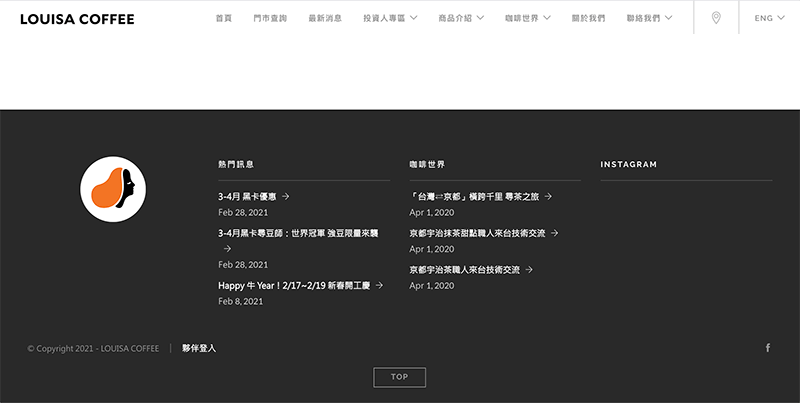 -
( 2 ) 首頁的圖文功能需要移動到照片上才知道目的地為何
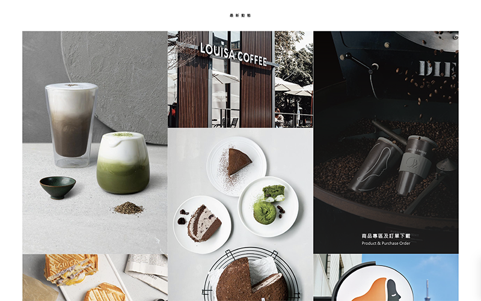
( 3 ) 首頁除了選項與首圖外，並沒有吸引進入其他內容的畫面，且標題文字不易閱讀 -
( 4 ) 最新消息無使用列表，採用文章全篇直接顯示
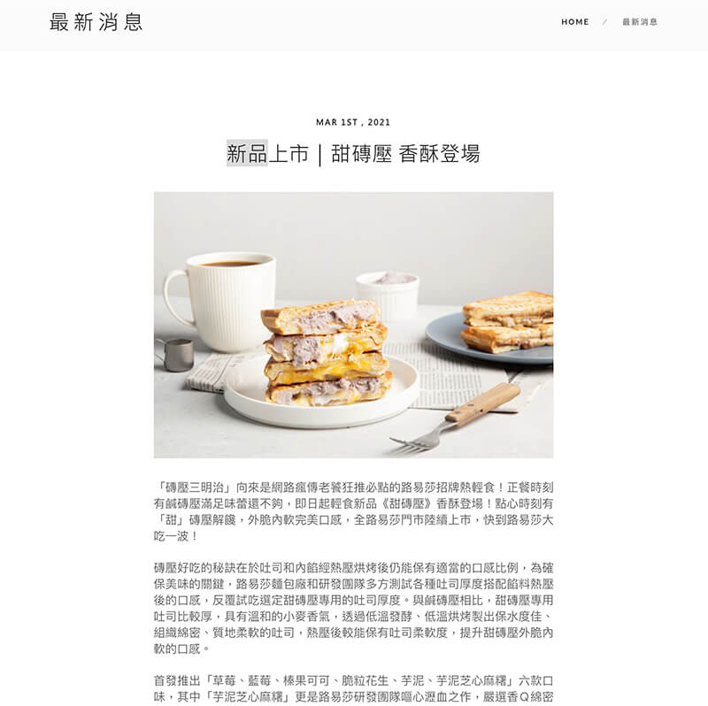 -
( 5 ) 商品採用文章式製作使挑選時閱讀困難，返回列表的動作也較為繁複
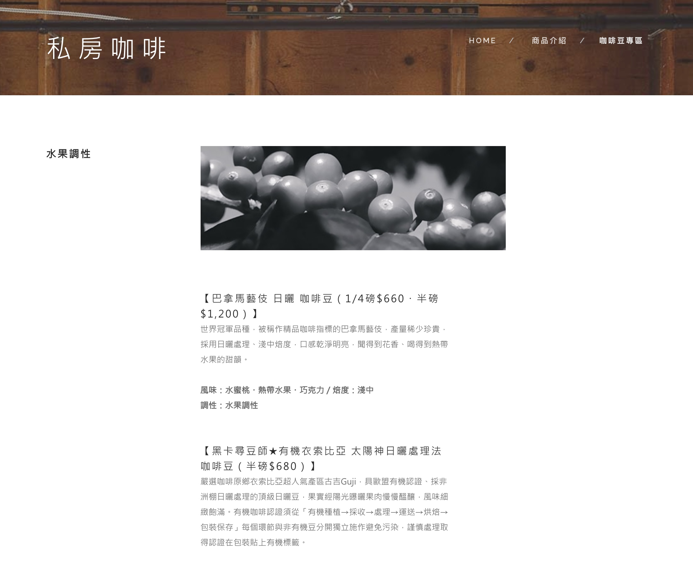
解決方案
針對上述問題，提出以下幾點解決方法：
-
( 1 ) 將首頁上方的 Menu 放置提供給顧客的產品資訊，而 footer 區塊的 Menu 使用詳細的分類，並將整體排列更有規則。
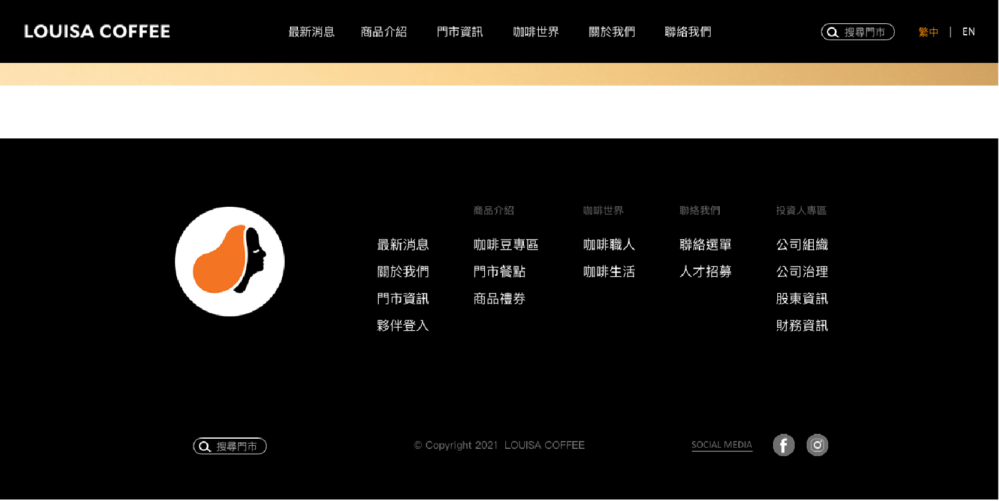 -
( 2 ) 最新消息、產品介紹、咖啡職人、咖啡生活放至首頁內容，並加強品牌色的使用。最新消息部分使用點擊輪播的方式，讓顧客可以更快速方便知道目前有哪些活動，而其他項目經過編排增加被點擊的可能性，避免只有文字說明的排列方式。
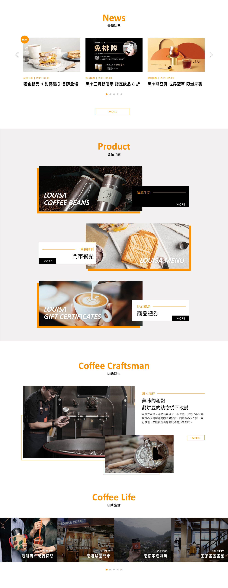 -
( 3 ) 點擊進入最新消息後，會先看到文章列表，而非直接看到整篇內文。
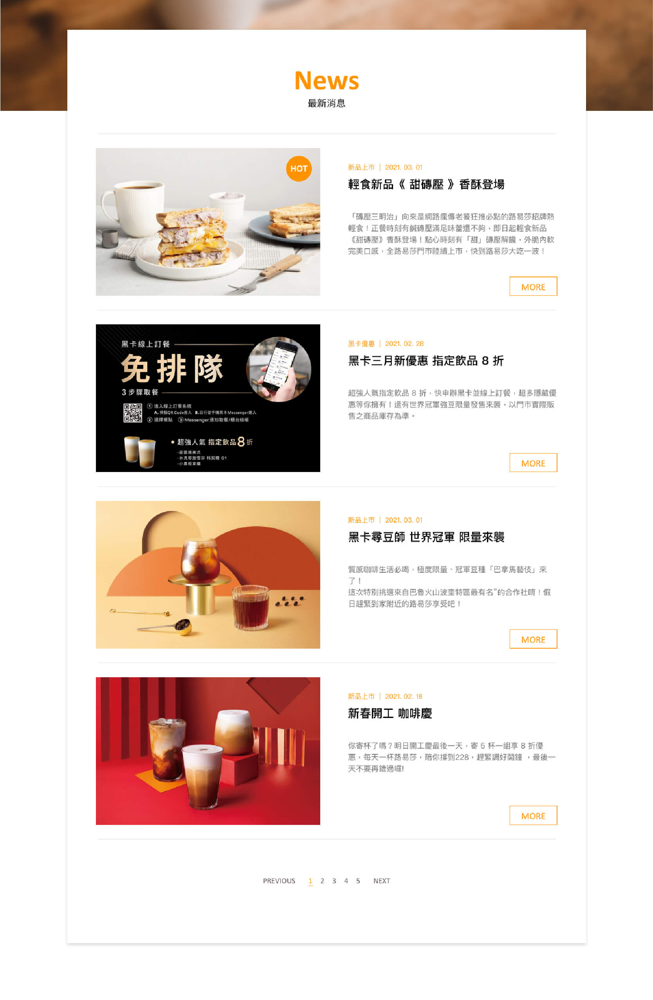 -
( 4 ) 商品頁讓頁面可直接點擊分類作切換，減少返回上一頁的動作，而商品的編排增加顏色的分類，讓人一目瞭然咖啡豆的調性與烘培程度。
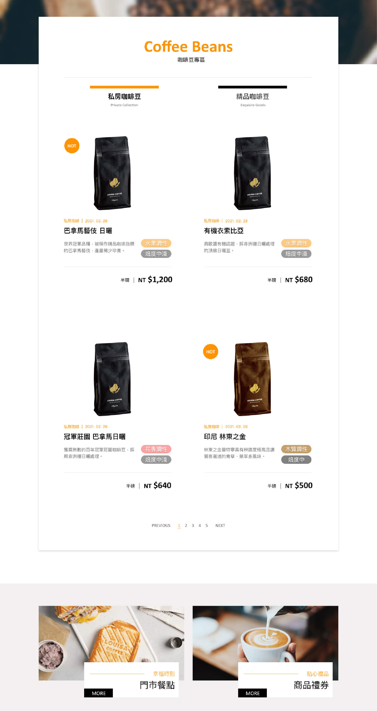
顏 色
-
#FFFFFF
-
#FF9300
-
#000000
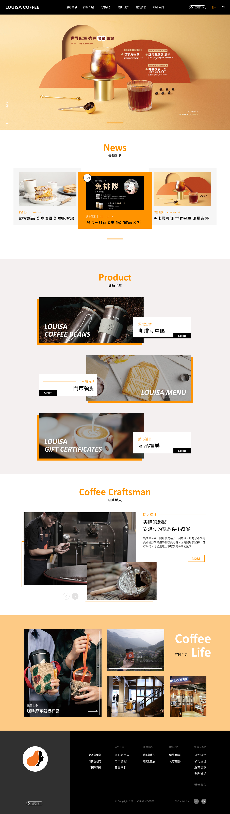
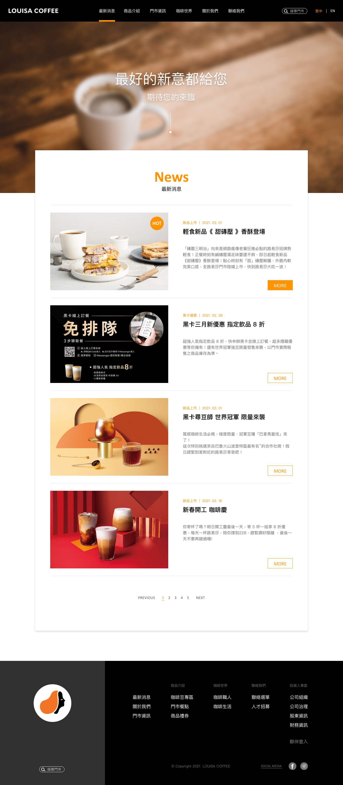
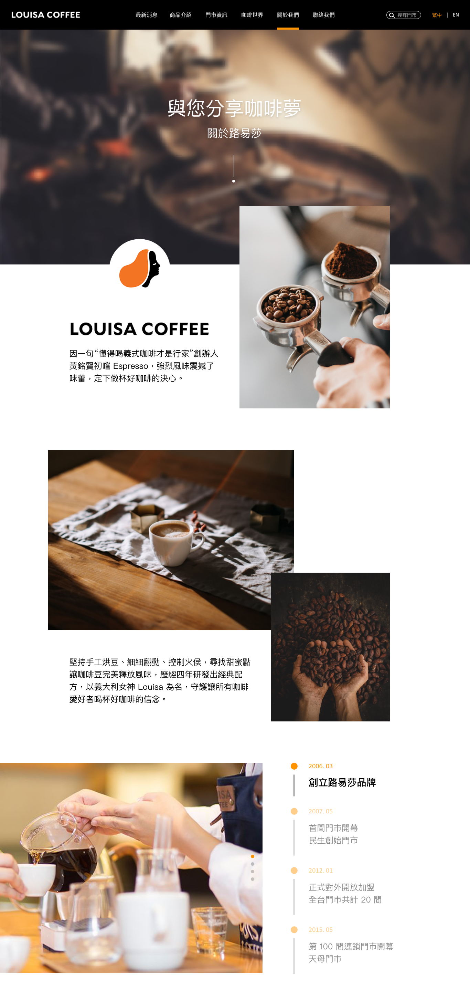
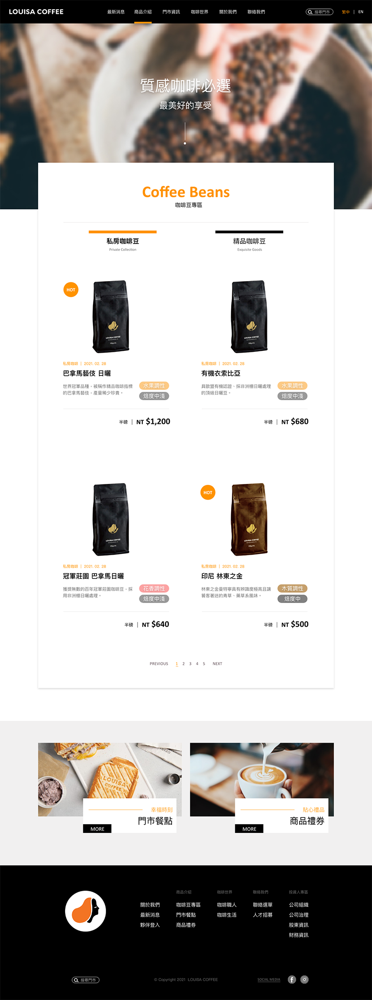
註｜圖片出處自路易莎咖啡官網 & 粉絲專頁